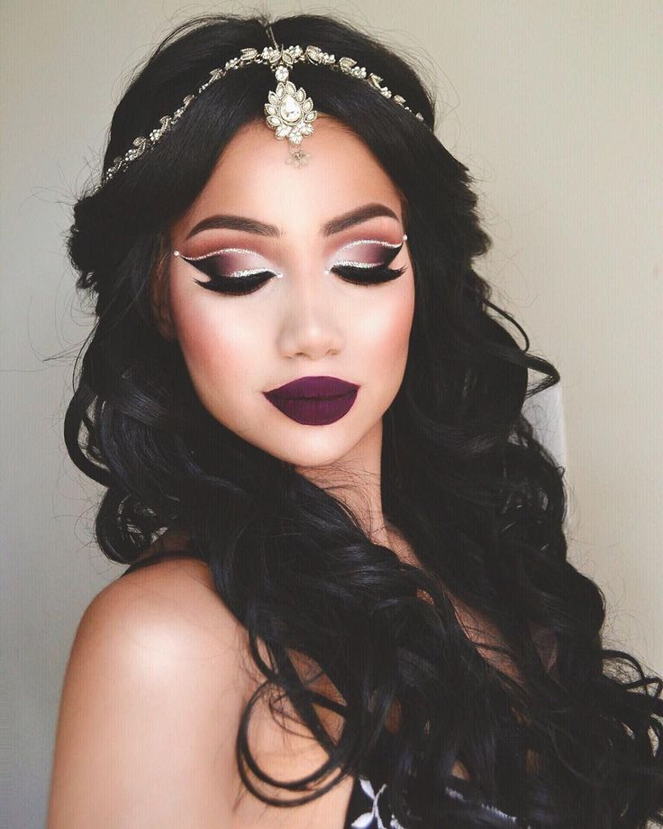

Makeup is self-confidence applied directly to the face.
We love makeup.
My intended audiance are the teenagers or womens how are intrested in makeup or love doing their makeup. We apply makeup in our faces to feel self-confidence because it's something you love to do. When we do our makeup is like doing art because we love our makeup. Its a huge passion liking makeup because you would go crazy when a new eyeshadow palette comes out. Makeup application can be a complicated business, as we all follow our own set of rules and protocol when it comes to putting our faces on.
To be able to have a perfect look of makeup you must have every tool and know how to use it correctly. For example is you use a foundation that dont doesn not go with your skin type your makeup later on will look like trash and you wont have a perfect look. You also have to use the correct color of eyebrow deep because we dont want it to look a different color besides your hair we want to make it match up with the color of your color. Makeup quality doesnt really matter because in reality what matters here is that you know how to put everything together to get a perfect look.
In this times now guys also do their makeup as well as teenagers.But in differnce that guys have to practice more and try different looks. But guys have the same passions as us girls and their nothing wrong on them doing their makeup.Guys also have to learn how to use every tool in order to have a succesful makeup look and they can even ask girls for more tips since they are new to something they have done in their life.
From the copper and lead ore that the ancient Egyptians used to create the world's first cosmetics to the scientifically advanced products of today that can do everything from hide pores, smooth complexions, and turn the pale green of your eyes a vivid shade of emerald, makeup has been an integral part of humankind for thousands of years. Over the centuries, women used burnt matches to darken their eyes, berries to stain their lips. Women throughout history put their health at risk with many of their homemade cosmetics. In some cultures, for example, women used arsenic, lead, mercury, and even leeches to give themselves the pale appearance deemed beautiful in the old days. Thankfully, we've come a long way from the days of using toxic and deadly mixtures to enhance our looks.
Here are some tools you use when doing your makeup: